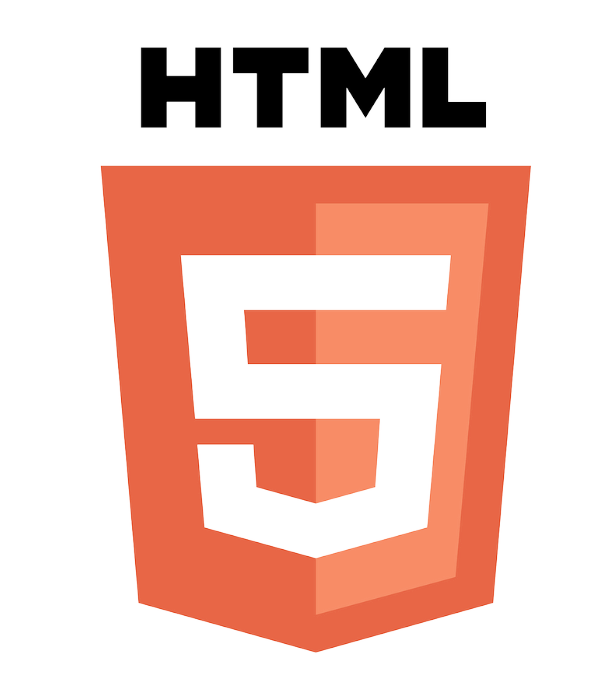
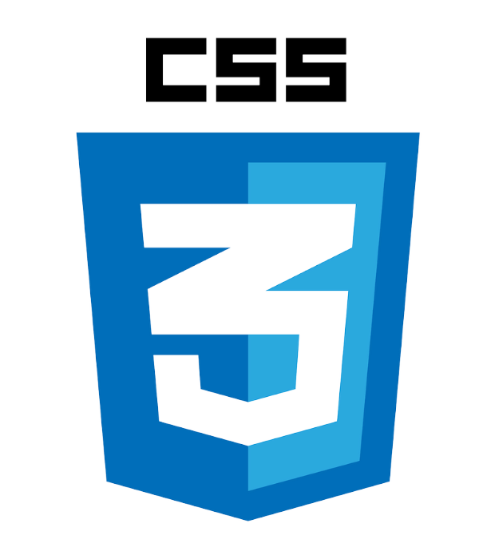

사용한 기술 및 특징 설명

HTML은 구조적 웹문서를 작성하는데 사용하는 마크앱 언어입니다.
저희는 각각의 ai, home & team, skill 페이지를 구성하기 위해 사용했습니다.
HTML은 구조적 웹문서를 작성하는데 사용하는 마크앱 언어입니다.
저희는 각각의 ai, home & team, skill 페이지를 구성하기 위해 사용했습니다.

CSS는 HTML 문서의 스타일을 지정하기 위한 언어입니다.
저희는 HTML에서 각 페이지 구성을
완료 한 뒤 각 페이지 요소들의 디자인과 칸이 움직이는 모습, 칸을 숨겼다가
나타나게 하는 모습, 다크모드 등을
그리고 반응형 웹페이지 구현을 위해 CSS로 사용하였습니다.
CSS는 HTML 문서의 스타일을 지정하기 위한 언어입니다.
저희는 HTML에서 각 페이지 구성을
완료 한 뒤 각 페이지 요소들의 디자인과 칸이 움직이는 모습, 칸을 숨겼다가
나타나게 하는 모습, 다크모드 등을
그리고 반응형 웹페이지 구현을 위해 CSS로 사용하였습니다.

javascript는 웹에서 동작을 실행할 수 있게하는 언어입니다.
저희는 이 웹에서 다크 모드 버튼과 accordion 클래스에서 버튼을
눌렀을때 접히거나 펼쳐지는 기능을
작동하게 하기 위해 사용했습니다.
사용한 툴

Discord
저희는 팀프로젝트간 소통을 위해 Discord를 이용하였습니다.

Git Hub
저희는 코드 공유 및 실시간 수정을 위해 Git Hub를 이용하였습니다.

Notion
저희는 자료 조사 및 업무 진행도를 정리 하기 위해 Notion을 이용하였습니다.